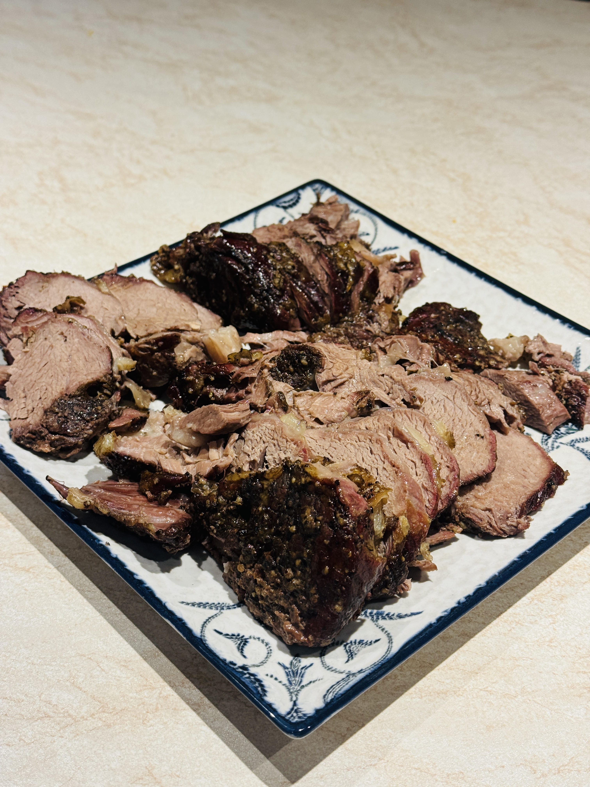
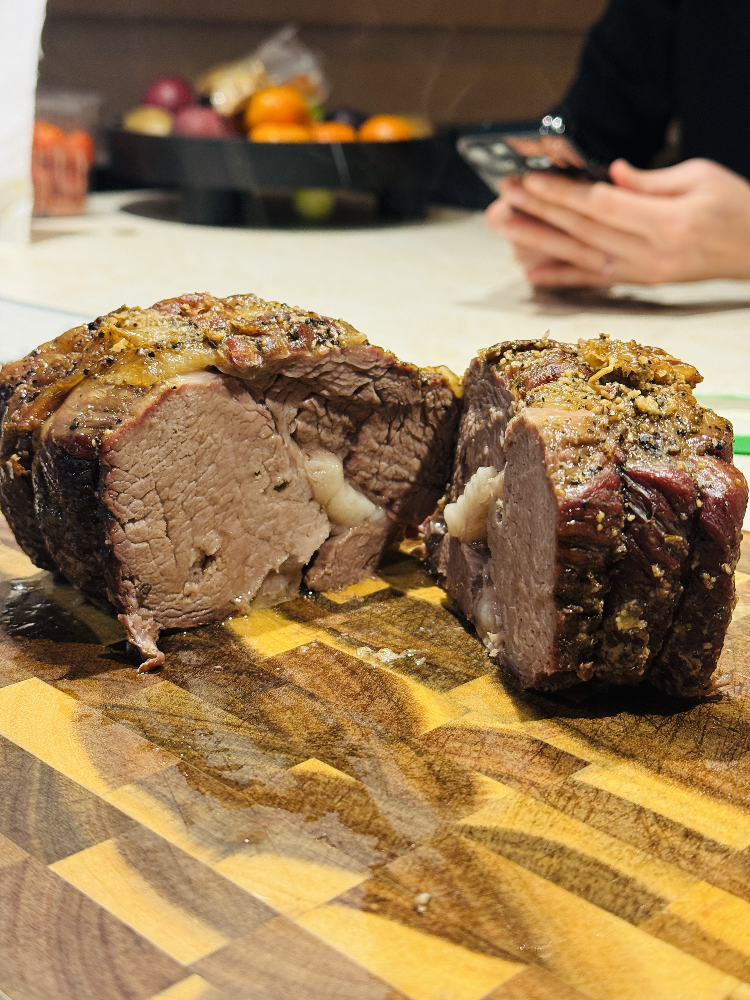

Brisket-Beef Loin
Ingredients
- Meat (Beef Loin)
- Mustard
- Oak’a SPG spice mix
- Butter
- 2 tablespoons beef broth
Instructions
- Coat the meat with mustard to act like a binder.
- Season with Oak’a SPG spice mix.
- Tie the meat with kitchen twine so it holds a nice shape.
- Place on the grill once it has reached 120°C.
- Grill until the internal temperature of the meat reaches 65°C.
- Add butter and 2 tablespoons of beef broth, then wrap in foil.
- Continue grilling until the meat reaches 95°C.
- Remove from the grill, wrap in a towel, and let it rest for 30 minutes.